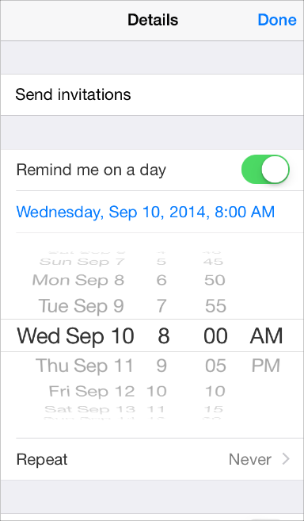

Interactivity and Feedback
Users Know the Standard Gestures
People use gestures—such as tap, drag, and pinch—to interact with apps and their iOS devices. Using gestures gives people a close personal connection to their devices and enhances their sense of direct manipulation of onscreen objects. People generally expect gestures to work the same in all the apps they use.
Tap To press or select a control or item.
Drag To scroll or pan—that is, move side to side.
To drag an element.
Flick To scroll or pan quickly.
Swipe With one finger, to return to the previous screen, to reveal the hidden view in a split view (iPad only), or the Delete button in a table-view row.
With four fingers, to switch between apps on iPad.
Double tap To zoom in and center a block of content or an image.
To zoom out (if already zoomed in).
Pinch Pinch open to zoom in; pinch close to zoom out.
Touch and hold In editable or selectable text, to display a magnified view for cursor positioning.
Shake To initiate an undo or redo action.
In addition to the standard gestures users know, iOS defines a few gestures that invoke systemwide actions, such as revealing Control Center or Notification Center. Users rely on these gestures to work regardless of the app they’re using.
Avoid associating different actions with the standard gestures. Unless your app is a game, redefining the meaning of a standard gesture may confuse people and make your app harder to use.
Avoid creating custom gestures that invoke the same actions as the standard gestures. People are used to the behavior of the standard gestures, and they don’t appreciate being expected to learn different ways to do the same thing.
Use complex gestures as shortcuts to expedite a task, not as the only way to perform it. As much as possible, always give users a simple, straightforward way to perform an action, even if it means an extra tap or two. Simple gestures let users focus on the experience and the content, not the interaction.
In general, avoid defining new gestures unless your app is a game. In games and other immersive apps, custom gestures can be a fun part of the experience. But in apps that help people do things that are important to them, it’s best to use standard gestures because people don’t have to make an effort to discover them or remember them.
For iPad, consider using multifinger gestures. The large iPad screen provides great scope for custom multifinger gestures, including gestures made by more than one person. Although complex gestures aren’t appropriate for every app, they can enrich the experience in apps that people spend a lot of time in, such as games or content-creation environments. Always bear in mind that nonstandard gestures aren’t discoverable and should rarely, if ever, be the only way to perform an action.
Interactive Elements Invite Touch
To signal interactivity, the built-in apps use a variety of cues, including color, location, context, and meaningful icons and labels. Users rarely need additional decorations to show them that an onscreen element is interactive or to suggest what it does.

A key color gives users a strong visual indicator of interactivity, especially in apps that don’t use an abundance of other colors. In Contacts, blue marks the interactive elements and gives the app a unified and recognizable visual theme.
The back button uses several cues to indicate its interactivity and convey its function: It appears in response to navigation, it displays a back-pointing chevron and a title that describes the previous screen, and it typically uses a key color.

An icon or a title that provides a clear call to action invites users to tap it. For example, the titles in Maps, such as “Add Bookmark” and “Directions to Here,” clearly describe actions that users can take. Combined with a key color, actionable titles tend to make button borders or other embellishments superfluous.
In a content area, add a button border or background only if necessary. Buttons in bars, action sheets, and alerts don’t need borders because users know that most of the items in these areas are interactive. In a content area, on the other hand, a button might need a border or a background to distinguish it from the rest of the content. For example, Music, Clock, Photos, and App Store use bordered buttons in a few specific contexts.

Photos uses a button border to differentiate the Create New Stream button from the explanatory text that appears above it.
Clock uses button borders in the Stopwatch and Timer screens to draw attention to the Start and Pause buttons and to make them easy to tap even when the user's surroundings are distracting.


App Store uses a button border in a table row to emphasize the distinction between tapping the row to get more information and tapping the button to initiate a purchase.
Feedback Aids Understanding
Feedback helps users know what an app is doing, discover what they can do next, and understand the results of their actions. UIKit controls and views provide many kinds of feedback.
As much as possible, integrate status and other relevant feedback information into your UI. It’s best when users can get this type of information without taking action or being distracted from their content. For example, Mail displays the update status in the toolbar where it doesn’t compete with the user’s content.

Avoid unnecessary alerts. An alert is a powerful feedback mechanism, but it should be used only to deliver important—and ideally actionable—information. If users see too many alerts that don’t contain essential information, they quickly learn to ignore all alerts. To learn more about using an alert, see Alert.
Inputting Information Should Be Easy
Inputting information takes time and attention, whether people tap controls or use the keyboard. When an app slows people down by asking for a lot of user input before anything useful happens, people can feel discouraged from using it.
Make it easy for users to make choices. For example, you can use a picker or a table view instead of a text field, because most people find it easier to select an item from a list than to type words.
A date picker in Reminders

Get information from iOS, when appropriate. People store lots of information on their devices. When it makes sense, don’t force people to give you information that you can easily find for yourself, such as their contacts or calendar information.
Balance a request for input by giving users something useful in return. A sense of give and take helps people feel they’re making progress as they move through your app.
Copyright © 2014 Apple Inc. All rights reserved. Terms of Use | Privacy Policy | Updated: 2014-03-10